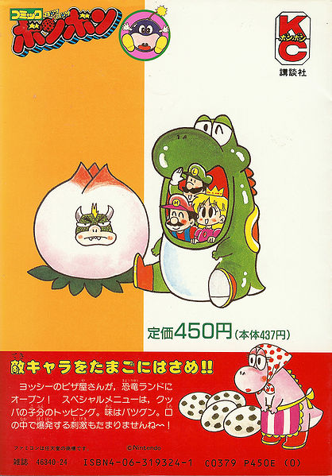
Bite-sized in fact!
Mario and else articles that don't contain oddities for the most part, are sometimes more personal, and overall too small to be one webpage.
Previously known as: My Top Video Games. No order! Hear me? *Update* There's a list now.. but it's not numbered at least!
Warning: Bloggy!!! This article was supposed to be my 'top choices' or whatever, but realistically I'm usually obsessed with too specific of a thing for such a curated list to be useful. This is more or less a glimpse into what I'm specifically into, why, and some old gaming history.
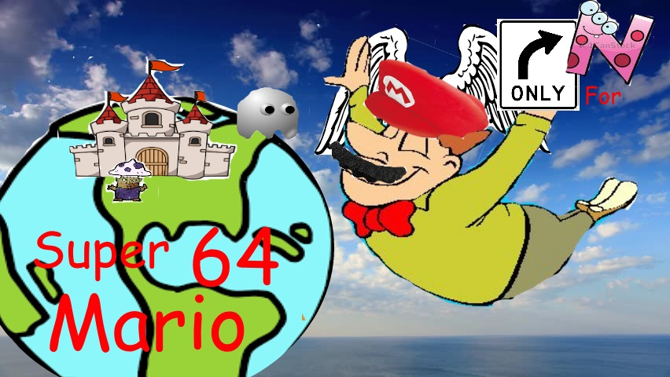
Official* box art.
**This may or may not be a lie
0. Super Mario 64 and DS remake: This is ground zero, my introduction to Mario around 2003 and what made me crazy for a Nintendo 64 as lightly detailed here. Like poetry, the DS remake was the first Nintendo DS game I owned. I was amazed out of my mind that they not only recreated that game on a handheld but added more content. It's a golden example of what an ambitious remake should be, with full respect to the original, a genuine effort to expand in ways that make sense, some fan service without going too far, and a boat load of fun, at least if you can adapt to using a D-pad..
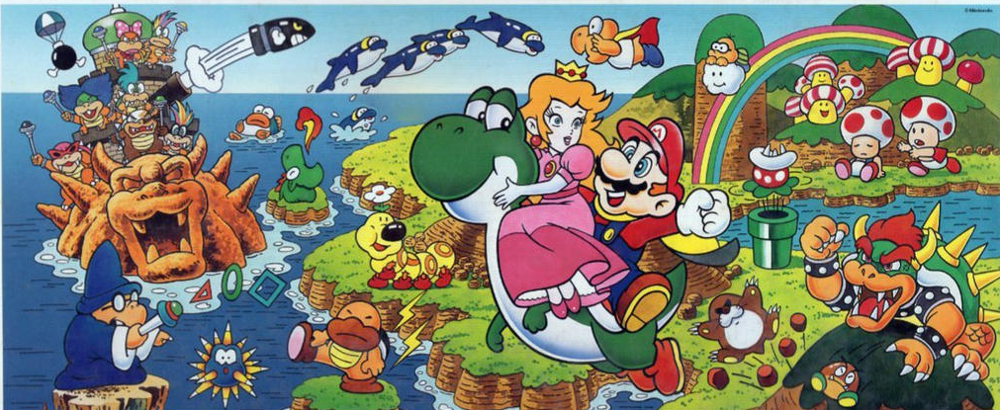
Explore nine worlds and 96 levels of non-stop action!
1. Super Mario Bros 4: Super Mario World: Super Mario Bros. 3 might have set the archetypical 2D Mario template, but Super Mario World refines it. I love the big heavily themed world, and the controls are exceptionally responsive. SMB3 is very solid but it’s respectfully a more primitive adventure. It's lacking backtracking, the secrets are more akin to contemporary NES titles where you either get it or miss it forever, and the journey in the original release is too long to not have a save feature. SMW's powerups aren't as varied, mainly think of fire flower and cape, but are very frequent, less situational, and interact with Yoshi. Mount characters are plain fun, we all know it. I also like that you aren't forced to use him either outside of some secrets.
Visuals are 16 bit perfection, not overly detailed but bright (to the point of washed out in the GBA port I initially experienced) and characters and enemies are stylized. It's a far cry from the unified modern Mario renders. Music is okay to me, but I like the wide soundstage and the introduction to the 'Yoshi bongos'.
Is SMW perfect? No. The save points are not as convenient as a newer game would have them, and some secrets get formulaic, typically involving flying somewhere with a cape or using Yoshi. Navigation can be slow if you don’t have all of the Star Road cleared and accessible. Some of the Koopaling fights are copies of each other (of course that’s a sin in later games too.) For anyone comfortable with platforming, this is mostly easy adventure, but it's not mindless and remains one of my favorite titles till this day.
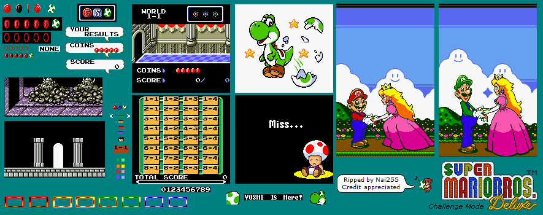
Bringing you enhanced portable remakes since 1999. (No, Game and Watch doesn't count..)
2. Super Mario Bros Deluxe: A GBA color ‘enhanced’ port of SMB, on the list for uniqueness. I consider this a precursor to the Mario Advance series remakes and a few other 'modern' design decisions in general. It ports over the NES classic with a few tweaks to fit the system a little more. This port was how I first beat SMB1 in the day and I swear that tiny bit of screen scrolling you can do made a difference. This game added a map system for fluff, but also a save system. Now we get to the goodies with the added extra ‘modes’. One is a general treasure hunt of sorts and it’s no laughing matter. Special coins and yoshi eggs are hidden in the vanilla SMB1 levels and you have to find them. Just try without a guide.. There’s also a You vs Boo race where you race him through a level while trying to survive. There’s stamps and other goodies that.. well you need attachments to enjoy so never mind. Had to sell those somehow! Anyway, SMB: Deluxe is a cool underrated game.
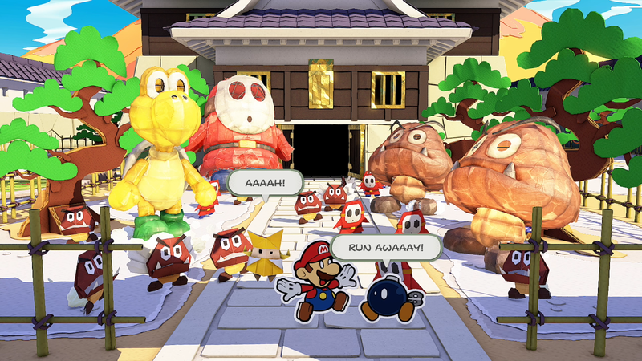
I was hoping I'd get away with this, uh, pairing.
3. Paper Mario: The Thousand Year Door (org. not remake) and.. The Origami King??: TTYD is God's gift to us. Okay that's hyperbole, but not even the backtracking and stage hazards tick me off much, so I must be a true fan. This was a Player Choice $19.99 game by about '06 when I picked it up blind, tipped over the edge by a Gamestop clerk telling me how great it was. (See, this proves that at one point they were useful.) This was my first RPG and introduction to Mario fandom, as the Mario games I'd played prior didn't really have story or lore like that. Aside from slowish navigation, there's nothing I seriously dislike. Almost everyone loves this one, so I won't rant. Fun fact: as a kid I was very proud of how I beat the Shadow Queen on my first try, albeit by the skin of my teeth. Replaying as an adult, it's not nearly that bad, but we can't discount a memory like that. It's a 10/10 for me. Oh, why is the remake exempt? Because it changed stuff.
The Origami King: I go into a lot of my thoughts elsewhere, so think of this as a diary entry: They did the most the could do with the parameters set, and it made an attempt to tell a story with characters you can like for reasons other than their ability to make paper-based quips or puns. The environments are also well crafted and most importantly the adventure left an impact on me in 2020 that Sticker Star and Color Splash couldn't.
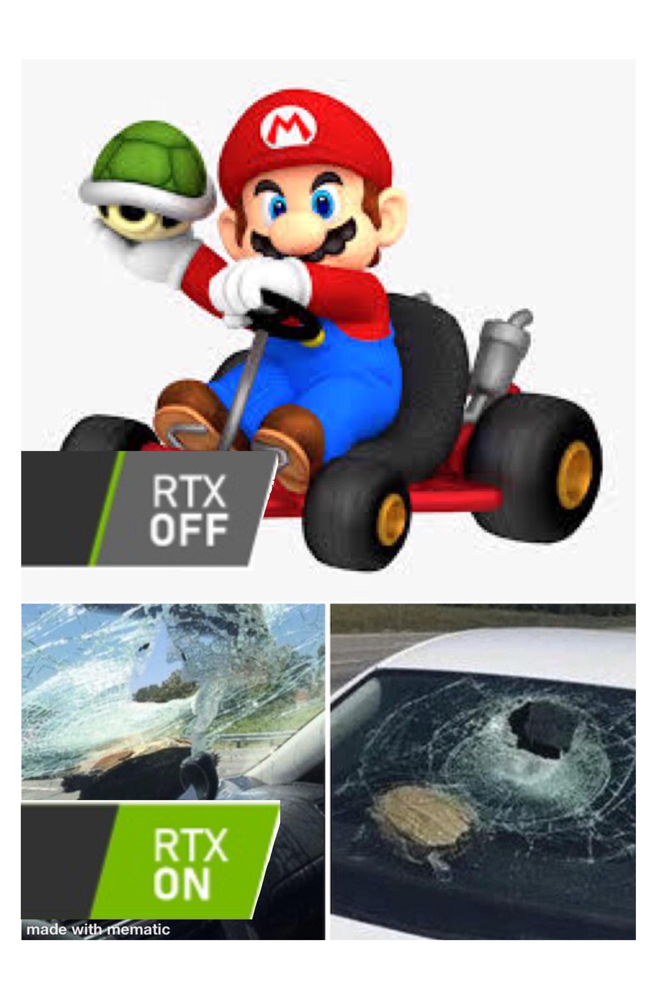
What switch do I flip to get insurance to cover this?
4. Mario Karts in General (Except less than half of them): More story time: Playing Mario Kart: Double Dash!! sometime c. 2005ish was incidental. Mario Superstar Baseball was too expensive new, so I left EB Games if I recall with a used copy of this instead. Lots of fun ensued with me and a friend, plus I had a hilariously inaccurate Prima Games guide too to gawk at. That being said, most of the observations below will come from me revisiting and completing the game as an adult, because come 2006 I was all about Mario Kart DS.
Well? MK:DD is neat and earns it's fanbase. The roster is actually perfect. Toadette was created just for this game, Koopa returned, we had spin-off staples likes Daisy and Waluigi (before that reputation was solidified), plus some villains of Bowser Junior, Petey and King Boo, all fresh characters. The double racer gimmick is more about determining your weight class and special item pool, otherwise its aesthetic and that's alright! I don't feel like you're throwing if you pick whatever character you want, though you might want to pay attention to the karts you pick. We have a good group of vehicles here, 'karty' and 'fun' and themed. Courses are fantastic and have been reissued in newer games for a reason. My only complaints is that single player content is lacking, and that's not in retrospect either. Back in the day, I mostly played this if I had a friend, because otherwise it was grand prix and time trails.
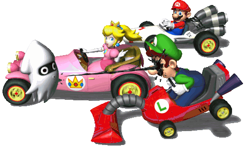
Wait, I thought the ink came from...
Mario Kart DS: A nearly perfect Mario Kart, only more impressive for being on a handheld. We have a sixteen new AND retro tracks, single player grand prix, verses, battle, and mission modes, plus local multiplayer AND the new at the time WIFI. The roster overall good and more back to the basics aside from Dry Bones and ROB, whose inclusion is spoiled by his themed karts being unlocked ahead of him. The controls are tight and responsive and the ability to see everyone’s items in real time is a game changer. The touch screen in addition showed the map and obstacles, one of the better implementations. The visuals are adequate, maybe ugly sometimes on closeups but not distracting in actual gameplay. My only grips are odd ones. Each character has a few karts at the start, instead of any choice for the weight, but they over compensate later by allowing any character to use any kart? Anyway, this is one of the greats.
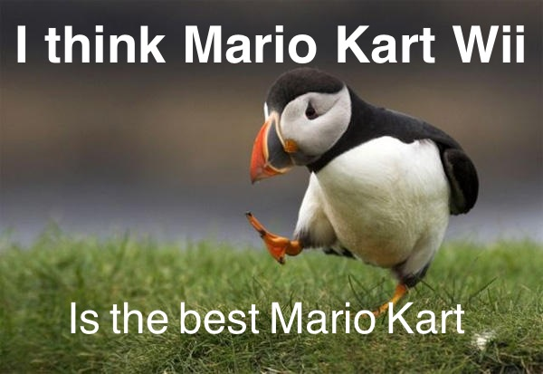
Mario Kart Wii: Just as good. We dropped the missions unfortunately, but it's otherwise content packed. We have fun new and retro courses, multiplayer, WIFI (if you like a wild-west approach), a cast that’s exactly as large as it needed to be, karts that look cool and are tied to the weight class like it should be as opposed to the character, and the final MK title where stats were set in stone, meaning you don’t have to min/max to be remotely competitive. Oh wait..
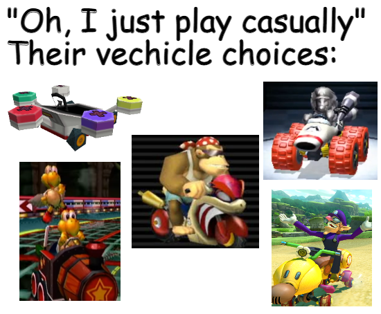
So it is highly personal, but the kart building mechanic in Mario Kart 7 onward takes away from having a kart that's actually designed. You have to accept a certain look for certain stats or ignore it and suffer. Those games also further segmented the weight classes in to more categories, but I’m digressing. Motion controls were ragged on back in the day but it was a free bonus that you could adapt to if determined. A review of MK: Wii was my first submission to Lemmy's Land under ‘super_stanly’. (See: here) I loved it when it was new and like it more with the direction the franchise has gone now.
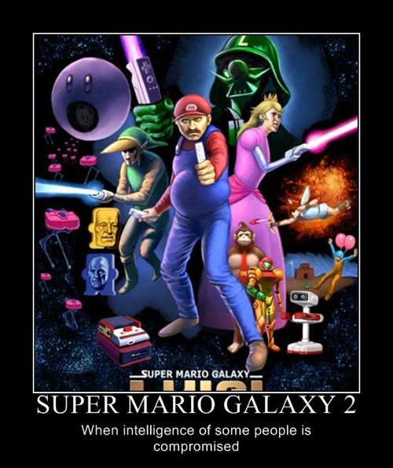
Pop Quiz. What number are we on?
5. Super Mario Galaxy: This 3D Mario platformer was an unforgettable experience for many, myself included. Funnily it wasn’t a killer app for me on the Wii like some of the other titles you’ll see on this list, though when I’d play it in game store demos I was impressed overall.
Compared to Sunshine, Galaxy goes back to basics. You run, jump, and.. spin jump, but it's natural. You have a hub that feels like one, and isn't decorated as a town, but it works and has no fluff in the way. Sunshine's progression was linear compared to 64, but here the levels themselves are too. You earns stars by reaching an end point, racing a NPC, or collecting things. Prankster comets add a twist of a time limit, collectibles, or giving you one hit. The biggest gimmick is gravity and we play with it in interesting ways. Galaxy's gameplay is tight and challenging at times. New characters like Rosalina had a backstory (that frustratingly they walked back on later), and Bowser comes off like a serious threat. There are plenty of bangers as far as level and boss fights go, though they aren’t as iconic as in 64 or Sunshine. Luigi made it in as a late edition. Making you replay the game as him for full completion is a bit much, but his journey is essentially the 'hard mode', which I liked.
Bonus: Super Mario Galaxy 2: It’s an expansion pack really, with a few extra ideas , tied together by a few quality of life but immersion diminishing features (like a level select). At least you can use Luigi early on. Green stars are littered everywhere as an extra challenge if you like scavenger hunts. I don’t hate this game by any means, (check out this article for more in depth thoughts) but it’s derivative and not a new adventure in my eyes.
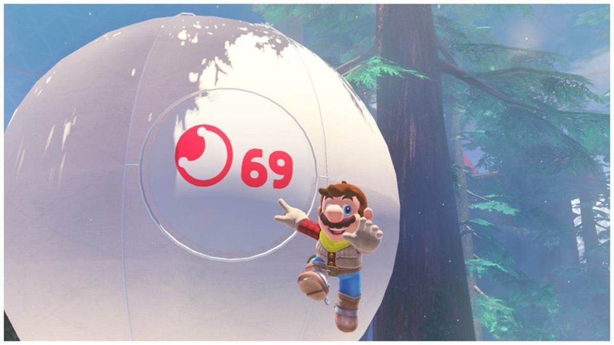
Nice
Super Mario Odyssey: Okay, now with that out of the way, Odyssey invokes 64 by being a collectathon again, with larger worlds and less linearity. Stars, or now 'Moons' come from missions or exploring until something happens. Cappy's capture (ie possess an enemy or object) adds some diverse mechanics without being overly committal. Even the plot caught my attention considering it involves both Bowser and Mario being overtly romantic to Peach. Ultimately the princess rides off to adventure solo. Figures. (In retrospect I kinda hate this scene. No Peach doesn't have to choose Mario, but why would Bowser be a contender? Super Mario Sunshine was on to something..) It’s fantastic. My only complains are at the end of the 'story' the game goes 'oh hey, you missed about a hundred moons somewhere. Good luck'.
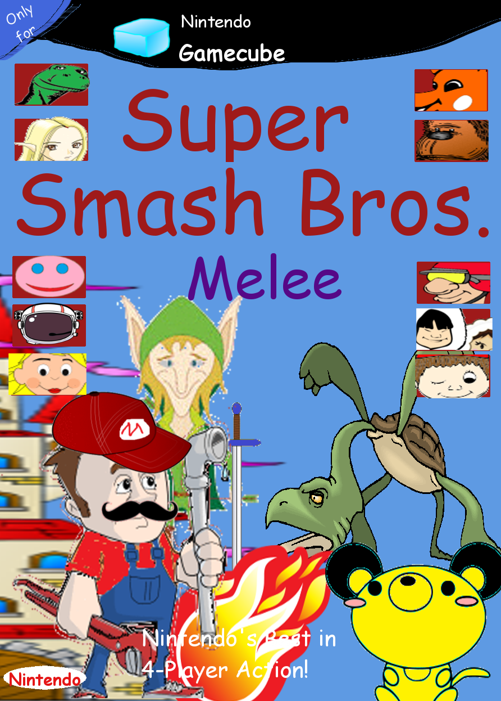
Official* box art (for real this time).
**Yeah, really.
6, 7. Super Smash Brothers Melee and Brawl: Even though I suck at it! This more or less introduced me to Nintendo IPs that weren't Mario. Also yes once a friend of mine thought Marth(a?) was a girl, long before we heard of memes! This game has been so overly analyzed that there’s little a layman like me could add to that, so I’m mostly going to discuss my personal connection for this entry.
Melee was a game I randomly picked up and fell in love with. I later got the Nintendo Power strategy guide as a subscription renewal bonus and I discovered what all I was missing because I was too terrible to unlock it. Donkey Kong was an early main for me here, later Mr. Game and Watch. I really liked the stages and modes here, plus the visuals even if they appear off-model by modern standards. In the end, Sakurai’s observation that there was too big of a discrepancy between expert and regular players was on point. I’m fine with Melee being what it is, but I’m even more fine with later Smash Brothers iterations attempting to give mere mortals a little more of a fighting chance.
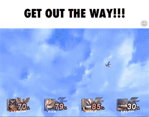
Here comes the GOAT of 2008!
Brawl: Melee but for plebeians like me. While I was among many dumb teenagers smug over it being watered down initially, I have more fond memories with this game than Melee due to all of the extra multiplayer time. Heck, during a wifi match with some old NintendoLand forum buddies I earned the ‘Mecha Epic Yoshi’ moniker I still use to this day. We also must applaud the huge amount of content here. I used to think The Subspace Emissary was ostentatious compared to Melee’s simpler Adventure mode, and looking back maybe whatever the narrative is supposed to be still is, but it's fun. Final Smashes was a cool idea, but I mostly disabled it. As for the rest, it's been said already. Great visuals, stages (after some grew on me), many modes, custom stage building, huge soundtrack, demos of old games meant to service as a 'museum' of sorts , and.. tripping, which didn't bother me much as a non-competitive type.
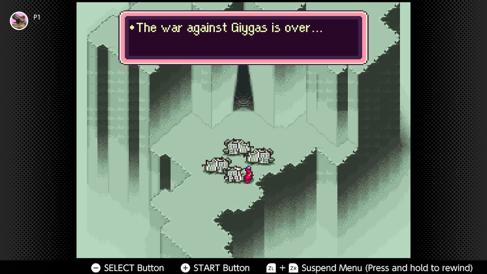
9. Mother/ EarthBound (Series): As this is another game analyzed to death by die-hards long before I discovered Mother from Smash Bros and the Feb 07 issue of Nintendo Power, we won't spend too much time here. After trying once or twice when younger and getting by butt kicked on Onett, I revisited Earthbound in 2024. Yeah, way late, but it was a pleasantly surprising experience. A time traveler puts Ness on a mission that's a kinda soft-reboot of Mother 1. It's not hand-holdy and has some difficulty spikes, but if you pay attention you can get through it blind like I did for the most part. I never knew of alternate, sometimes cheap ways I could have dealt with situations, and I mean that as a complement. I like the characters and the settings a lot. In an older more neutral meaning of this term, some of lessons and themes here are progressive for their time. There's some non-linearity, in fact I'm not sure what the intended sequence is supposed to be for some Sanctuary spots. The soundtrack is full of bangers, and while the over world sprite work is simple for SNES standards, the battle screens are trippy. Team balance is all over the place and oft the blame for some of the spikes, but by the end the crew are powerful, not to mention every enemy has weaknesses. Some might call that a bit much, but if you are consulting a guide (which came with the game to be fair) it's not always easy to exploit that. Overall, it's just really good. The 'wacky indie RPG' genre it inspired on the other hand almost never gets it quite right. That's my truth and I'm sticking to it!
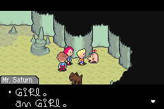
Mrs. Saturn found??? (Well, in Japanese they aren't supposed to be a Mr. anything, but let's stick with the joke..)
Mother 3: It grew on me, with a darker and raw, yet introspective journey that takes place long after Earthbound. The battle system is familiar, except tapping buttons to the music's rhythm grants extra hits, and a few other tweaks and refinements. Sprite work is good, though the battle backgrounds aren't as exciting as Earthbound. Difficulty wise, there is a spike or two. Mostly however the game is making you play smarter and contrast EB, where almost nothing prevents blasting away with PSI and bottle-rockets before the attack roulette does something nasty. Your character's abilities have less redundancy than in Earthbound and playing to their strengths is essential the farther you get. One chapter tries to give you some freedom, but overall this is more linear. Music is good, but held back by the GBA's lesser capabilities. Without recounting the story, I like that you can see some change in the tightly knit cast. Settings are limited to the Nowhere Islands, but that's a plot thing. Earthbound might be the adventure I favor, but Mother 3 is a better and more poignant story.
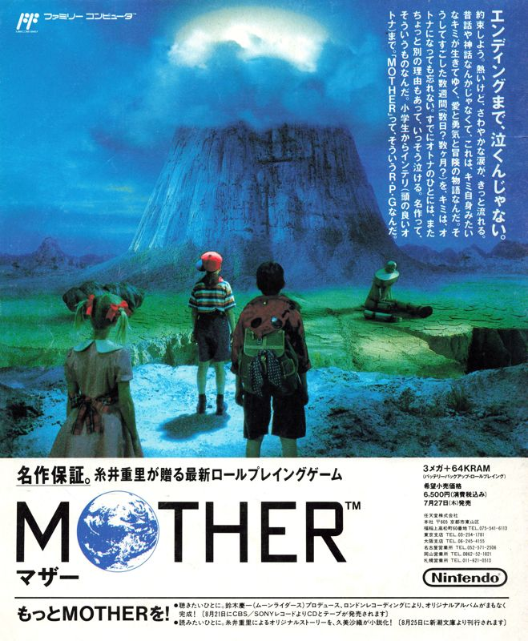
Dragon Quest, in America!
EarthBound Beginnings: Beginnings is more down to Earth, taking place in actual America, and it might have a more typical RPG battle system, but I respect the very non-structured adventure. Plot wise, your grandfather left you a book, there's aliens, there's strange things happening, collect melodies and.. whatever else you stumble upon. You know, there's a charm to the whole game nearly being on one map. The music is composed exceptionally well for the NES and there's an uncertain vibe here yet to be replicated. This game isn't as quirky as the rest of the series, but we must remember that the aim was to be an urban RPG before that's a trope yet. The balance isn't great. PSI and equipment is weird or OP, and there's the typical punches older games throw at you, but if you can roll with them I think it's worth playing My biggest complaint is the stuff before the Giygas fight, the Mt. Itoi trek. Besides some tough enemies, it's awkward how you have to make the trip twice. You can finagle a lot however, and have different teams confronting Giygas. Or Ninten alone. Can't do that in the sequels. (Without cheating)
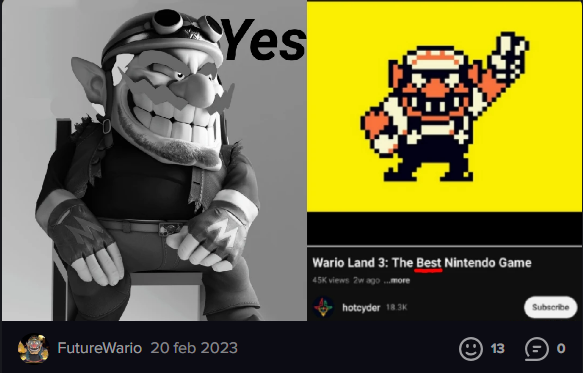
Nice (2)
??: Wario Land 2 and 3: I gave up counting. I also wish I remembered how I got into this series. I’m not sure if it was picked up on a whim or if like Earthbound a Nintendo Power (upon checking, WL3 WAS in the Playback section of issue 216 so..) tipped me off. Anyway, I’m combining the entries because I played them interchangeably, though they are rather different games in reality.
On an initial WL2 playthrough you’ll go chapter by chapter in a ‘story’ that comes down to reclaiming your treasures from Captain Syrup. After reaching one ending you’ll have a level map where the secret routes are spoiled, but whatever, at least you know what you’re looking for. To collect treasure you must win either a memory game or a logic puzzle with numbers. Play well and lose little money or play badly and bleed it. Wario takes on his signature transformation when exposed to certain enemies or stimuli and this is the key to navigation or a punishment. Bosses get annoying because errors will transform you detrimentally or plain kick you out of the area, but it’s a great game for me overall with lots of content. Note that there were Gameboy and Gameboy Color versions of this cart. If you started the GBC version up, you wouldn’t be able to play it on a normal Gameboy without resetting your save, which I found irritating when I owned several handhelds. The sprite work is sharp either way.
Wario Land 3 has the anti-hero suffer a forced landing in a forest, where he's transported to a village inside a music box under chaos! It’s all about exploring vast levels for keys and chests to collect treasure, gradually unlocking access to new areas as your pillaging triggers events and give Wario additional abilities. There is a day and night feature that affects the levels sprinkled across four maps. Since Wario has some of his WL2 moves tripped at the outset, the early game is a little slow, but you'll get them back and then some soon enough.
Memory and logic mini-games are replaced with golf that’s half skill half RNG. Since you cannot die the bosses like in WL2 tend to turn you into a one-hit wonder. Transformations, more varied than before, once again vacillate between being the thing you need to get somewhere or a punishment for getting hit. The environment looks better than WL2, but I was always bothered by how Wario himself looks the same. I like the music and leitmotif. Overall there are some annoyances but this is sealed in my hall of fame for being (along with the DS remake of Mario 64) the very first video game that prodded me to go on my slow-as-heck computer and look up a Gamefaqs. WL3 would then become the first game 100% as a kid.
And Wario Land 4: Out a year after WL3, 4 takes a huge step forward and perhaps is the pinnacle of his series. Wario has a health bar, but the typical move set is present from the start and there are transformations from non damaging enemies, albeit a little de-emphasized. The adventure feels a little small though, Wario treasure hunting down four main passages in a temple, each containing a few levels and then a boss. The bosses are legendary though, at least to me and tough on harder difficulties. In typical gameplay it’s often easy to each the end and trigger the frog switch and then rush to the starting portal again, but finding the chests and the CD can be another issue.
Unfortunately it's short. Every level has an identity for sure, but once all the tricks are shown off that’s it. The levels are far less spectacular in WL2 and 3, but they feel like longer adventures regardless with secrets. WL4 has secret areas within levels but you will see the majority of the game without doing anything special, killing replayablity. Fun fact: I bought 'Game Design Companion: A Critical Analysis of Wario Land 4' book by Daniel Johnson and you should too! There's a choose your own adventure book based on this game, but they say that one's disappointing.
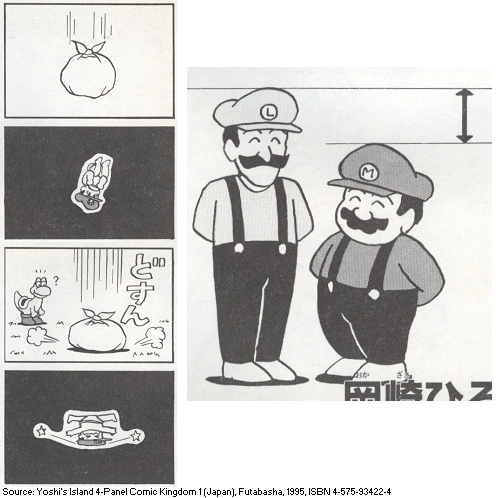
A drop on the head would explain the inconsistency
?? Yoshi's Island (Series, or some of it): This is an entry for posterity. I grew up with this series and even bought Yoshi's Island DS at launch, and when it's good it's good. I was a defender of the then underrated Yoshi's Story in my 'super_stanly' days here, but by the time I was blogging I felt that the majority of Yoshi's catalog was mediocre. I know more about the games now and would add that Yoshi's Woolly World is high quality and Yoshi's New Island not as horrible as they say, but overall this series is inconsistent beyond Super Mario World 2. Being a diary entry, I'll be general. The main-series boxes themselves with same Kamek vs Yoshi clan tale over and over, and not in the way Mario repeats his general plots, so it really comes off uninspired. I'm not including his puzzle games and else, but besides those we have near tech demos like Topsy-Tury or Touch and Go. Music is also hit or miss in the series, ranging from epic to hilariously strange or bad. All Yoshi games put some effort into visuals, even in the games people are ho-hum about, and if you can't get enough of the cutesy thing, you'll never be short of supply here. For me personally I was just a huge fan of Yoshi, and while he was main-series character for Mario, you had to take what you got for his solo games. That hasn't changed much. At least his Smash Bros stages are cool.
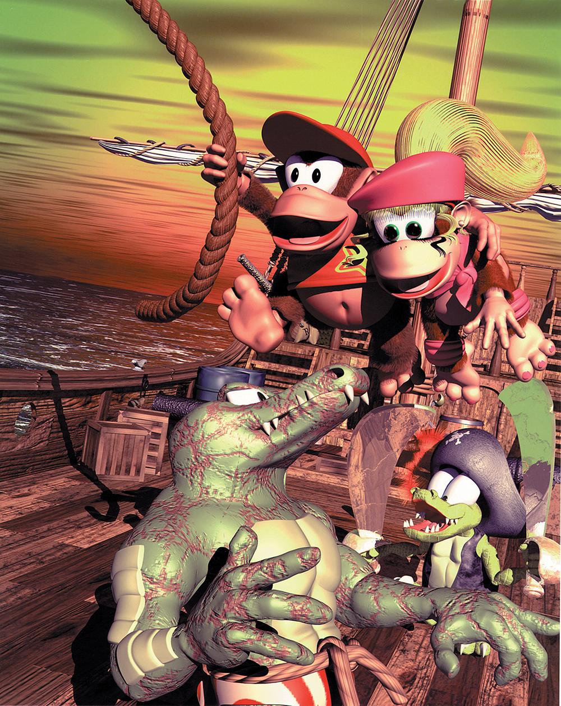
Enjoy these lovely 90s renders
?? Donkey Kong Country 2: Diddy's Kong Quest (SNES, GBA): When I purchased this (GBA port) new, I was a pseudo-Donkey Kong fan from essentially demoing Donkey Kong 64 over my cousin's place two or three times, exposure so limited I thought liked it better than Super Mario 64. (See point zero. This was before the Nintendo DS port refamiliarized me.) I became obsessed with Donkey Kong Country 2, the pirate setting influencing the 2005ish era of my Slammerverse. This is a worthy step up from the cruder, still technically impressive Donkey Kong Country. It also holds it's place against Donkey Kong Country 3, purchased new by me (unaware that it was a SNES port in fact. Again, this predates my retro collecting), which made a number of decisions I didn't care for. DKC2 broke the soon to be usual pattern of a small and large Kong. Besides controlling well in general, this gives you Diddy, fast and for the 'experts' and Dixie with a ponytail that's sometimes training wheels but also a circumstantial strategy with the tough antics thrown at you. We have some borrowed tropes and some new ones here, stunning visuals, and iconic music. This has been analyzed by fans enough, so this is another diary entry for me. Donkey Kong's franchise can be a bit like Yoshi's in that you almost forget some games exists, except he has more ports of the same game on handhelds and got revitalized well enough in the modern era, unlike Yoshi's output. Donkey Kong's spinoffs get interesting, but that's for another article. Maybe that's why I'm a fan of both.
While many great memories are from the GBA port, just like with Super Mario World in entry 1 (see), the SNES is what I prefer. The Gameboy had no choice but to butcher the palette and downgrade the music, plus for some reason they redrew the maps. There are QOL improvements as to be expected, like the freedom to save anytime and not use the tokens, and some nerfs, but also small changes with no rhyme or reason. It's a mixed bag, but definitely from the 00s era of really 'trying'. We have bonuses and collectables, mini-games and even a new boss. Compared to the Super Mario Advance series, I think the Donkey Kong Country trilogy did more on the Gameboy... Advance. The GB/GBC Donkey Kong games? Quirky, but best discussed elsewhere.
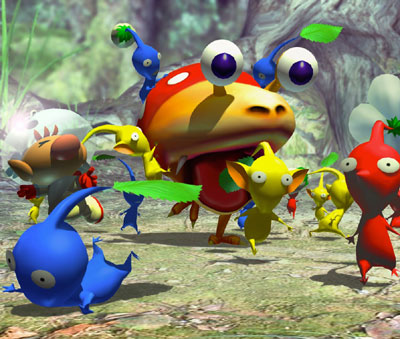
?? Pikmin (main series): On a whim, I got into this as late as... mid 2026. This is a disgrace and I will accept punishment. Anyway, I adore this (mostly) RTS style franchise. Pikmin, a Gamecube launch title is about Captain Olimar, who has crash landed on an alien planet. His commentary and voyage logs explore his thoughts and how he's dealing with the ups and downs of the journey. They also behave as soft tutorials depending his actions and encounters. You and the Pikmin as he coins them are equally dependent on each other, so you must plan well to survive. It's daunting, but on repeat plays you won't sweat at all. The extra reach your cursor has in the New PLay Control Wii port is OP, QOL tweaks are welcome, though swarming is awkward without direct c-stick control. The music is legendary. I only wish they planned out the 25 of 30 mandatory parts mechanic. Olimar's descriptions of parts can be sorta coy, so don't count on that lest you get the bad ending! Minor stuff aside, this is a short but well executed experience. 10/10.
Pikmin 2: This sequel is more zany, increases the difficulty, and adds product placement... And this rocks in fact. Olimar returns to find his company in debt. Now he has return to the alien plant to hunting treasure with a co-worker named Louie. Discover new Pikmin and dive into caves riddled with riches, danger, and kaizo traps. Don't get too frightened, you have no day limit. It's full of content and expands lore with the Piklopedia. Music is phenomenal, with more environmental mixes. Reflecting back I think it's a hair too long to 100%, but 10/10 either way.
Pikmin 3: Three Koppaites must save their planet from starvation by collecting fruit on PNF-404. Developers were trying to sharpen your Dandori with the new tools available, but the day limit is generous if you never get the hang of splitting the team up. Since I like tension however, the one of the best moments besides the climax is when your food supply goes missing and you must scramble to survive. Rock and Flying Pikmin essentially replace White and Purple, but do more in exchange. The final boss is eldritch, doing well to invoke the gimmick of a certain cave in Pikmin 2. I love it. Music is moodier, but well composed. I disliked removing the swarm for a finicky charge command, and some boss fights are time sinks if you don't exploit their cycle right. The WiiU version was never that challenging, so for some reason the Switch port reduces the difficulty more. Deluxe has additional content though, so I'll have to check it out. Overall this down to PNF-404 adventure lacks a huge wow factor, but the adventure is solid, the visuals gorgeous, and the three temperament ensemble certainly are a thing. Always thought Alph being Olimar's Smash Bros alt was odd though. 8/10.
Pikmin 4: You are a rookie Rescue Officer, sniffing down (sometimes literally) treasure and castaways stranded on PNF-404. New features include Oatchi, functioning as a leader/Pikmin hybrid, Dandori based challenges that speedrunners will enjoy, and night 'tower defense' modes. Pikmin 4 looks, runs, and plays excellent. The problem is that it's A: a 'greatest hits' and B: full of watered down modernisms. The crash landing plot goes from merely repetitive to parody. The ambient soundtrack is unmemorable. There are superfluous achievements and side characters, and your Rookie never comments on his or her experiences like leaders should. The callbacks feel genuine, no nostalgia-slop here (also I'm too new to be nostalgic anyway), though they're usually nerfed. It's all too safe. Caves are back, but never that dangerous feeling. There's limits with the Pikmin on the overworld, and in general some are just underutilized. Enemies don't respawn unless you clear an area, leaving it empty. Glow Pikmin have immunities and Ice Pikmin freeze stuff to make it easier. The most exhilarating and proper RTS style challenge Pikmin 4 can offer is Olimar's Shipwreck Tale, where you have 15 days to collect 30 parts. This is tough to rate. The quality is high and it's not hostile or subversive, but we're going in the wrong direction. 6 or 7/10.
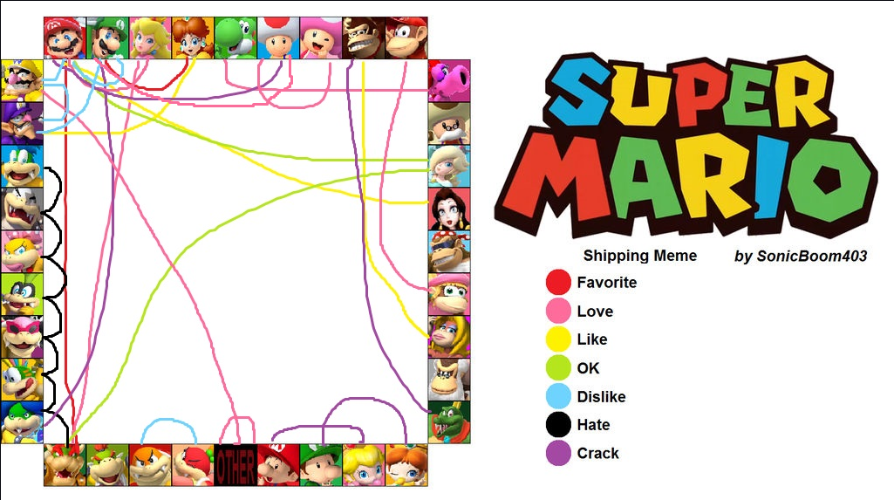
And soon regretted it.
This was posted to my Deviantart in 2019 and due an update. Yes, this is meant to be silly, enjoy. Credits to the creator listed on the image for template. Anyway-
Favs: So, Mario x Bowser... Not like that, but I have no choice but to acknowledge it. I saw EchoEternal's 'Eternally Never Yours' (or at least the first few chapters of it) and combined with some additional ideas from an original work of mine, I created a more plutonic 'Frenemies Forever' series. While I rate Luigi x Daisy highly here and have paired them in some of my works, it's been thoroughly explored and I don't see anywhere provocative to go here as is my modus operandi. Since they are an opposites attract type couple, to me anyway, embellishment is needed, reinforcing why they are obligatory compared to Mario and Peach, who aren't a real couple either but at least have the base rooted in canon.
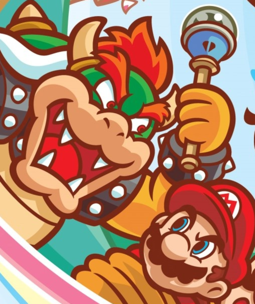
Bowser threatening Mario with a 'Vibe Scepter'. No, we won't elaborate.
Loves: So about Mario x Peach. Typical and done everywhere but there's interactions to justify it, and a story that fleshes both out can make it work. Peach x Bowser is a common switcheroo and I'm not sure what I liked about it since canon Peach would never entertain canon Bowser. Of course this is about fan works and while they'll both have to be tweaked, it can be done there. Just don't villainize Mario or ilk to do it. Yoshi x Birdo? Canon. Not much to say. Toad x Toadette? Not personally, however as far as their more canon traits go I see why it's popular. No, she's not his sister. Wario could be with Mona I guess is where I was going by putting him with this mysterious 'other' person, but I'm not super into the WarioWare fandom. Diddy x Dixie, sure because it's already official, plus Donkey Kong Country 2 is amazing.
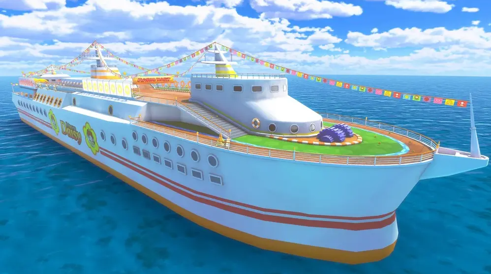
Smooth sailing?
Likes: Mario x Pauline. Mario's Real World history is frequently dipped into when it comes to television and movies, so nothing too special here. This is another official one, but there's much to explore with a pre-Mushroom Kingdom Mario, so the opportunity is there. Waluigi x Daisy is actually crack to me since I think they canonically hate each other, but I can see some writer playing off of that tension. Donkey Kong x Candy was an obligatory pairing I think. I barely know Candy's character, so I'd bump this to okay. Not listed but Mario characters x Smash bros characters could be decent, but I won't specify who with who!
Ok: Bowser x Rosalina. Where's the chemistry? Even when I wrote 'Return Customer', that was a request, not something I personally saw. Mario x Rosalina don't have a strong vibe but Mario has canonically helped her tremendously and it's subversive. Luigi x Rosalina is done at times too. More gaps to fill, but even more intriguing potentially. Peach x Daisy is missing because I wasn't thinking of yuri then. I apologize. Also I don't read yuri. You won't see that word anywhere else on the site I promise. This pairing (from my small sample size) seems inclined to adopt similar characterization, but if I was theoretically into yuri (darn it) I see why people will try to make it work.
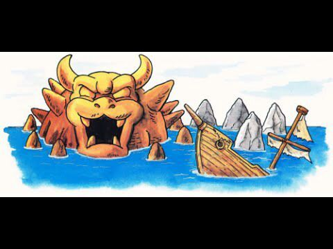
Hope you brought a life raft.
Dislike: Any combos of the Marios plus the Warios. Mario x Luigi- no. Also it has never been done in character, not that I've done extensive research, but that's an issue even if the incest doesn't matter. Boom Boom x Pom Pom I dislike if from general disinterest with the characters. This wasn't trending in 2019, or if it was I didn't know about it, but I hate Bowser x Luigi. Every time I've seen it, again not that I've looked too deeply, it's OOC. Something about has a predatory vibe, though that might have something to do with the particular type of weirdo (no offense but..) that writes/draws this.
Hate: Inb4 Koopaling incest pairings. (Reference to 'Devil in Plain Sight' by CosmicKitten89, where the author was also snarking at this) Story time: When I was new to FF.net, I filtered for Koopaling content. I'd came from G-rated Lemmy's Land, only to find a lot of this to my confusion. You know, the way Koopalings are handled in fanfiction can get interesting. We have folks clearly inspired by the cartoons, then the Lemmy's Land folks who are a bit of that mixed with culture specific to that community (including really not liking Bowser Jr), then the 'post-NSMB' or maybe even Paper Mario types. The Koopaling's linage can date a story, because at a point Nintendo went 'jk' they aren't Bowser's kids when we all knew better. Cue stories trying to hybridize what and who they were and etc. I rambled enough. Don't ship them!
Crack: Mario x Toad was here as nod to CloudySkies17695, where I saw the meme. Ludwig x Luigi because I forced them to work together in New Frenemy Adventure? Otherwise I've never done or seen that. Donkey x King Krool? Again I've never seen it or tried to look, I was more or less just judging here. Babies x babies: well, how about no. Don't put me on a watch list. Wait, why were they options? See, this is when memeing gets dangerous.
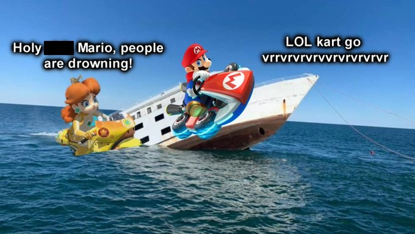
Remarkably I had fun
We're done. Stop laughing. To sum it up, I get the appeal sometimes. Some of the earliest stories I read on FF.net were shipping stories, albeit the super palatable- or was it? (See the 'Favs' category above) Either way, I gradually tuned them out for works of other genres or doing something more unique. Note that that's when I felt that fandoms were alright. Now? Well I won't tell you what to do, but if you must be a part of one, wear that personal protection equipment. Alright? Cool. Thanks for reading!
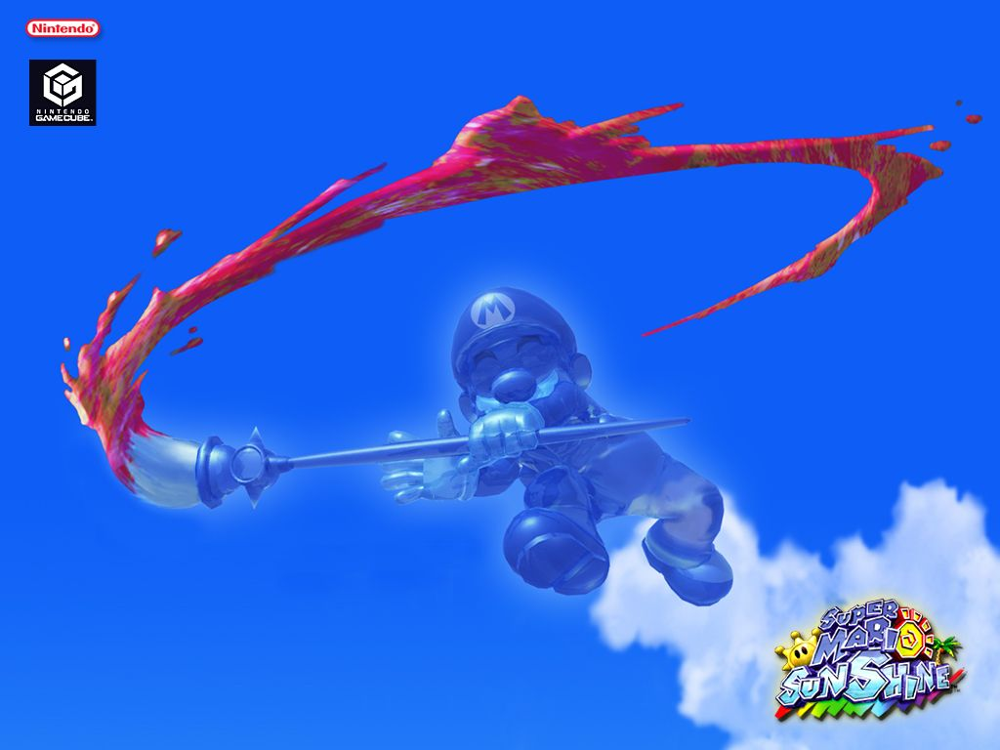
'The coolest thing ever!' - kid me
As mentioned briefly in the Lemmy’s Land tribute, it was my unpopular opinion back in the day that 2002's Super Mario Sunshine wasn't great. It was a killer app for the GameCube and I wanted to love it, but coming from Super Mario 64/DS I couldn't. How do I feel now? It's still complicated. Here's more comprehensive look at what I like and dislike about the classic. (Boy I feel old..)
-What I love? Sunshine is bright, the water shimmers, it's heavily stylized (with an in universe explanation it turns out regarding enemies) and experimental. The cinematic presentation is goofy, but that captures the zeitgeist of the sixth-generation consoles and the early 00s, talking large strides forward. There are a plenty of callbacks that sneak in, and the 3D platformer foundation is laid by Super Mario 64's revolutionary structure, but like many Mario Gamecube titles that remain unique till this day, it's anything but formulaic and safe.
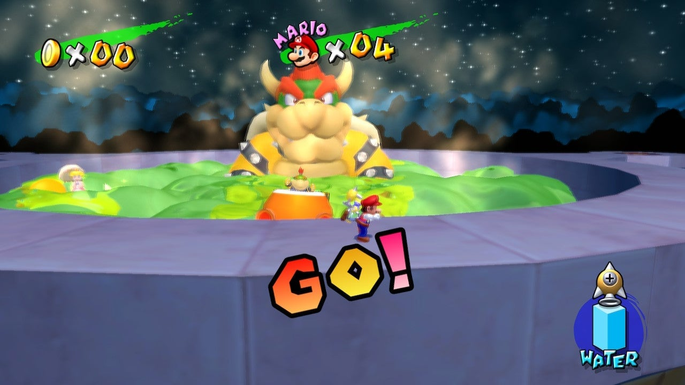
Sometimes its possible to be too creative. Kidding. It sill rocks.
Isle Delfino, scenery: The hub world of Delfino Plaza is no Peach Castle. It's full of NPCs and all of our stages will be integrated into it, not a portal in a painting or a different galaxy, country, etc. The missions to collect the shines and beat Bowser are diverse. Familiar is exploring or puzzle solving, racing an NPC or beating a boss. Those fights are.. acceptable, or original at least, though its bizarre that most encounters with Bowser Junior are merely chase scenes and Bowser is only at the end. New are escort missions, tasks using the FLUDD, 3D platforming and other tasks that involve helping someone out. Some special areas ARE divorced from the scenery intentionally and with no explanation. A random floating obstacle course, or diving into a bottle, or that pachinko machine. I think Galaxy took from this personally. The tropical seas are not always tranquil, and there are infamously annoying, difficult, and mandatory sections. Some of it is unintentional due to wonky physics, some of it is just petty punishments for mild failures (losing a race, the blooper surfing), and other times they are simply expecting a higher level of play from you. I respect that now. Someone on Gamefaqs said that it's like a litmus test and is correct. All players will encounter a little trouble here and there, but if they have a decent control on Mario it won't be insurmountable. Basically if you're super bad at it.. It's a you problem. (And I can say that. For kid me, it was a me issue!)
Sound: The music is fantastic, both the main themes and the side ones. We get the vocal synth sounds for the FLUDD-less parts that appear in later games too. The voice acting has fifth and sixth-generation console all over it, with the serviceability of lines from characters varying, and the direction so odd it's like a comedy, but the novelty of having any sort of significant voice acting in a Mario game made up for it at the time.
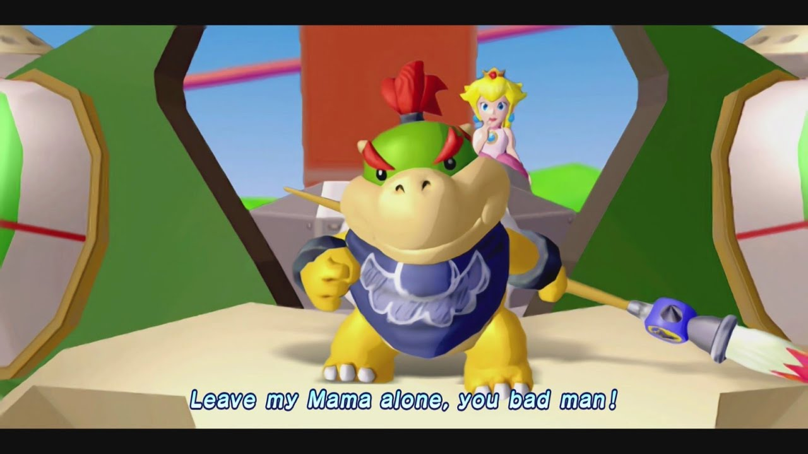
As much as he made us Lemmy's Land regulars seethe, his intro was unforgettable. The gall of this guy calling Peach his mom, thus implying that she's slept with Bowser in an E rated game, and Peach's reaction is.. not vehement denial? Think that would fly today? Course not.
Lastly, our cast and its legacy: Sunshine characters like Piantas and Nokis, Petey Piranha, and Toadsworth were a big part of Mario, only fading away somewhat in the WiiU era. My username of 'Mechayoshi' came from Mecha-Bowser! Yoshi shows up and not just on a roof, though you can take him on A roof if you want. He fires juice and can't touch water for some bizarre reason (well it turns out he's made of graffiti, but only revealed in Japanese. Something got lost in translation here), but they take the time to tie him to a platforming mechanic rather than just being a fun ride to hitch. The our star of the show, Bowser Junior retconned history either for a while or until this day depending on how you look at it, a true break out character. As the flagship Mario title, Isle Delfino elements popped up often in other titles, slowing down only when Galaxy (and Rosalina) were the game to reference.
-What I hate? Sunshine has the most tedious tasks of the four (64, this, Galaxy, Odyssey) 3D platformers, and some show up relatively early too. Some FLUDD-less sections, some bosses, random mini games that are touchy, races against cpus or the clock that steal a life if you fail (what 64 didn't actually do).. Etc! Arg!
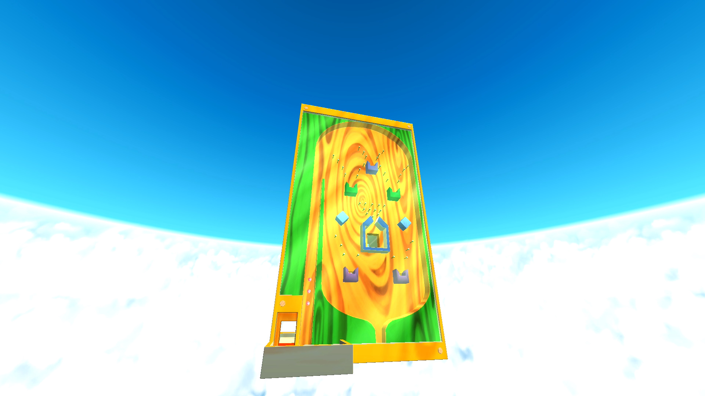
If ya know ya know...
The camera: Sometimes it's great and yet other times feels worse than Super Mario 64's. You have full control, but this comes with very little priority on what it shows you. It's content to park something opaque in your way and leave Mario maneuvering blind. 64's more limited cam prioritized keeping Mario on screen, behind his back if possible. Sure, the environment isn't so visible, but you know what you're doing.
The plot: Mario, Peach, Toadsworth, and a few Toads go on vacation and you can't help but to eye roll at the complications to follow. I understand the initial suspicions between Mario and Shadow Mario, and even find the trial he's put on amusing, but the two appear simultaneously multiple times. I'm not sure if I hate or love how somehow after collecting a few shines Peach gets kidnapped anyway. Thought we were going to subvert that? Nope! This really isn't a great game for her, at least ignoring the unintentional stuff, like her reaction to Bowser Junior. Then there's the mystery of why Prof. E. Gadd would give the paintbrush to Bowser Junior. I just don't get it. Lore stuff with the islanders can be a tad interesting, but doesn't go far and some bits contradict or sound tossed in because they likely are.
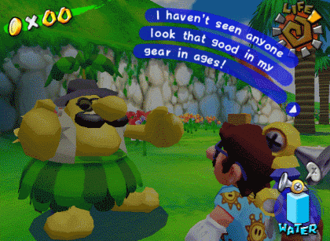
Don't flatter me, especially at one health.
Shine episodes, mission requisites, other tasks: One important difference is that Sunshine's event flags aren't actually about your shine count, it's about reaching the seventh mission in the worlds, where you spray down Shadow Mario. Right away we've lost the flexibility Super Mario 64 gave you, where outside of a few events like beating Bowser or else (and even those can be sequence broken, but let's pretend otherwise for now), you just had to scrape up the minimum amount of stars however you could. That's it. Here you will play through all the worlds and clear the episodes in order. Now you can enter Corona Mountain and deal with it's own headaches.
Back to the episodes, there's usually one shine in them and sometimes blue coins (and no guide if that's the case. Good luck). Mario Galaxy would borrow locking down stars to a mission, and Odyssey hybridize with 'plot' enforced moons but others to discover via exploration. Anyway my primary complaint as a child was that you could get stuck on an episode with no way to access the later ones. Now I understand that this allows for the levels to be dynamic, sometimes very much so. That's less of a 'flaw' and more a change in design philosophy.
More on that: In 64 wandering around with only the slightest hint on what to do was typical for the time. Sunshine goes for a more structured, even 'modern' approach where the task is explicit. Still though, you can often branch off the beaten path only to not do much short of collecting coins, and I find that awkward. Funnily Galaxy 'fixed' that by being more restrictive and making the planets only as explorable as they need to be. There are 100 coin shines, but not all episodes have enough and you have to see for yourself. Keeping the red coins like they were in 64 (albeit in Sunshine they only exist in their own episodes, and some stages can unnaturally have two red coin missions) but making the blue ones a collectible as important as the shines (30 in most levels, plus more in side ones, making 240 in all) was quite a choice. Note that they don't add to the regular coin counter either. It's fun to deal with until it isn't the the best way to sum it up, exacerbated by the game not tracking them. They might taunt you visibly or be triggered by the most random things. Odyssey was clearly was inspired by this, except more refined, oh and trackable!
FLUDD: I really want to like this guy considering it is a Gaddget, and most of my issues are more faults of implementation. Being both offensive and a mobility assistant is unique, but the nozzle switching mechanic is a let down. As a kid I remember hating how Mario couldn't just punch stuff anymore. Now you spray everything in the face until it dies. Kill it with.. water? (Strange how that trope never took off.) The nozzle attachments are cooler in theory than anything and you're restricted to the default nozzles for 90% of the game outside of goofing off. Fine, it fits with the theming, but the stop and spray and manage your water stuff just isn't my preference. Galaxy reworking it to be a point-and-shoot with the star bits or Odyssey with Cappy flinging and possession just work more fluid (no pun intended) for me. Alright that's it. I'm gonna-
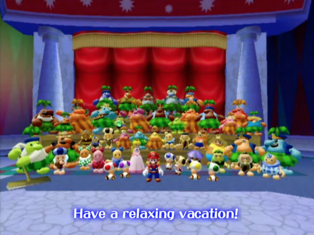
Mario: Cool and all, but an apology woulda sufficed.